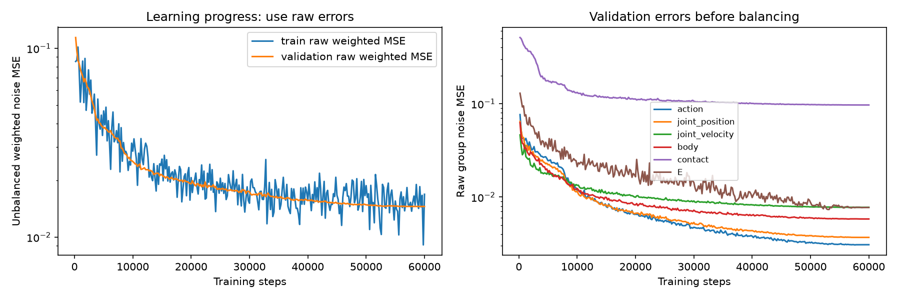

후속 실제 task 평가 완료: 지그재그·원형 4초/10초 결과와 영상. 본 페이지 아래 수치는 학습 직후 기본 진단 결과임.
[사실] 60,000step 학습과 기본 예측 진단 완료. 학습·검증 기록300개에서 실제 합산 손실 비율20/20/20/20/10/10을 확인했음. [판단] 학습 완료를 형상·행동 공동 생성 성공으로 해석하지 않음.
[구성] PD kp200 데이터16형상·2432episode, train2192/validation240. 기존 v12의 모델·정규화·학습 조건 비율·seed·학습 횟수를 유지하고 목적식만 변경했음. 실제 손실 비중: action 20%, joint_position 20%, joint_velocity 20%, body 20%, contact 10%, E 10%. 몸통은 위치·높이·자세·선속도·각속도14개를 포함함.
[방식] 매 학습 묶음에서 그룹별 평균 오차 크기에 반비례하도록 계수를 조절함. 계수는 역전파에서 상수로 취급해 학습 신호를 유지함. 이미 조건으로 주어진 항목은 생성 손실0이며, 정확히 오차0인 항목도 기여0임. 매우 작은 오차 확대는 분모1e-12 하한으로 제한함. 이 비율은 스칼라 손실 비율이며 파라미터 업데이트 비율을 고정하는 것은 아님.
[사실] 조절한 합산 loss/val_loss는 거의1로 일정하므로 성능 지표로 쓰지 않음. 조정 전 검증 오차 val_raw_loss는 첫 기록 0.114162 → 마지막 0.014539. 자체 최저값은 0.014535, 58800step. 최종 체크포인트는60000step이며 최저값 step과 다를 수 있음.

[사실] 같은8개 검증 episode의 기본 Mode1 (= 실제 E·초기 상태·행동을 주고 움직임 예측) 진단: 관절 오차 2.50→2.92도, 위치 오차 7.35→11.25cm. 이 작은 진단은 형상 교체 일반화·task 성공 평가를 대체하지 않음.
[미검증] 틀린 행동 추가 오차·형상 교체 시 전진 변화 부호·새 task 생성·10초 MJX 성공은 학습 직후에는 실행하지 않았음. 이후 실제 task 평가는 위 후속 보고서에 별도로 완료했음. 기존 가중 전 val_loss와 새 가중 손실의 숫자를 직접 비교하지 않음. validation_by_source_mode.json의 균형화 손실값도 성능 비교에 쓰지 않음.
[검증] 데이터·구현 해시, 체크포인트 전체 파라미터 유한성, 예측 유한성, 실제 비중과 손실 항의 합 검증 통과. GPU 전체 사용 관측 최대 2126MiB, RAM 여유 최소 16.6GiB. 소요 9.4분.